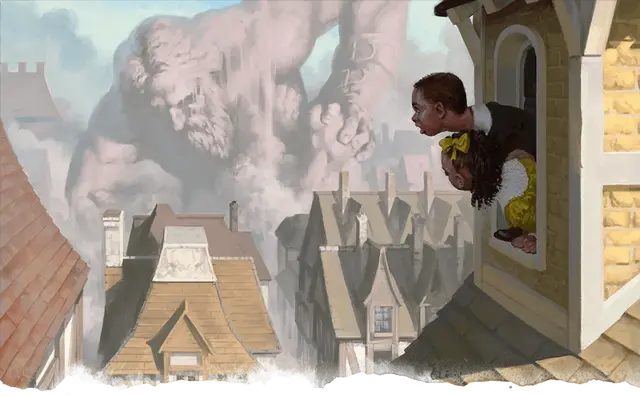

Ходящая статуя Глубоководья
Walking Statue of Waterdeep
Громадный Конструкт, без мировоззрения

Класс Доспеха 17 (природный доспех)
Хиты 314 (17к20 + 136)
Скорость 60 футов
| мод | спас | ||
|---|---|---|---|
| СИЛ | 30 | +10 | +10 |
| ЛОВ | 8 | −1 | −1 |
| ТЕЛ | 27 | +8 | +14 |
| мод | спас | ||
|---|---|---|---|
| ИНТ | 1 | −5 | −5 |
| МДР | 10 | +0 | +0 |
| ХАР | 1 | −5 | −5 |
Иммунитет к урону огонь, психическая энергия, холод, яд; дробящий, колющий, рубящий от немагических атак, кроме нанесённых адамантиновым оружием
Иммунитет к состояниям окаменение, отравление, паралич, очарование, испуг, ошеломление, истощение
Чувства истинное зрение 120 футов, пассивное Восприятие 10
Опасность 18 (20000 опыта)
Бонус мастерства +6
Особенности
Осадное чудовище. Ходящая статуя Глубоководья наносит двойное повреждение объектам и строениям.
Неизменяемая форма. Ходящая статуя Глубоководья обладает невосприимчивостью ко всем заклинаниям и эффектам, изменяющим его форму.
Сопротивление магии. Ходящая статуя Глубоководья совершает с преимуществом спасброски от заклинаний и прочих магических эффектов.
Падение колосса. Когда хиты статуи снижаются до 0, она разваливается и уничтожается. Каждое существо на земле, находящееся в 30 футах от разрушающейся статуи должно совершить спасбросок Ловкости Сл 22, получая 22 (4к10) дробящего урона в случае провала и половину этого урона в случае успеха.
Действия
Мультиатака. Статуя совершает две рукопашные атаки.
Удар. Рукопашная атака оружием: +16 к попаданию, досягаемость 5 футов, одна цель. Попадание: 29 (3к12 +10) дробящего урона.
Метание камня. Дальнобойная атака оружием: +16 к попаданию, дистанция 200/800 футов, одна цель. Попадание: 43 (6к10 +10) дробящего урона.
Описание
По Глубоководью разбросаны восемь громадных статуй, призванных защитить город в час великой угрозы. Они настолько разрушительны, что их применяют только против вражеских армий и почти непобедимых врагов.
У каждой статуи есть своё название и уникальный облик (см. «Ходячие статуи», стр. 182), но характеристики у них одинаковы. Статуя Девы Меча разрушена и не подлежит оживлению, а остальные семь может оживить лишь обладатель Чёрного посоха.
Достопримечательность. За долгие годы жители Глубоководья понастроили зданий вокруг статуй и прямо на них, считая их не более чем достопримечательностями.
В неоживлённом состоянии статуи и правда неопасны — но соединённые с ними строения рухнут, как только статуи впервые оживут.
Природа конструкта. Ходящая статуя Глубоководья не нуждается в воздухе, пище, питье или сне.